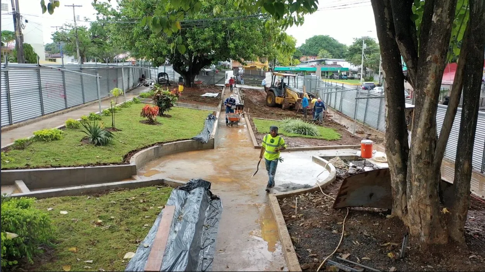
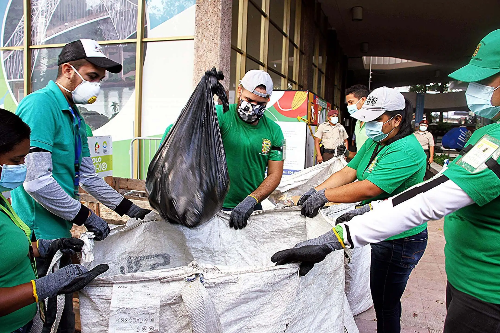
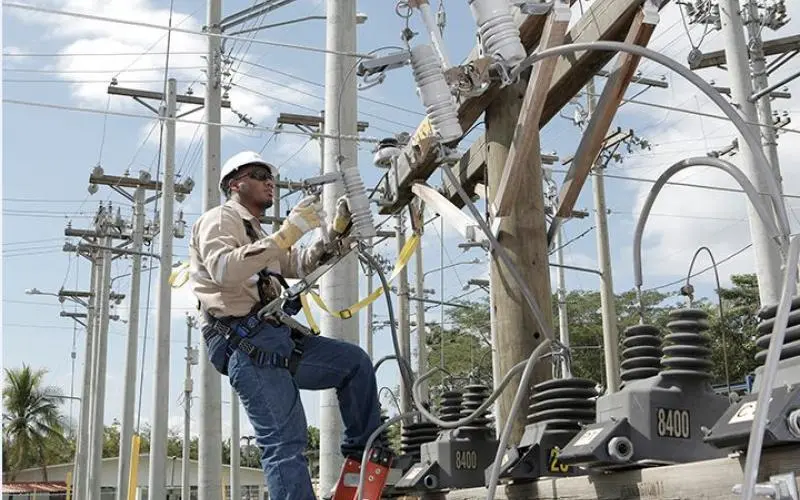
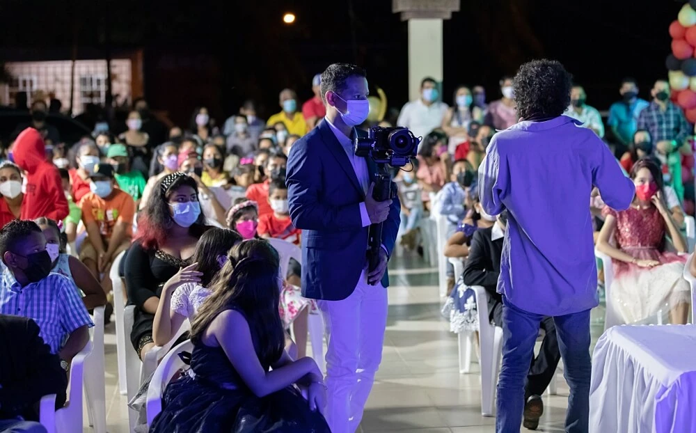
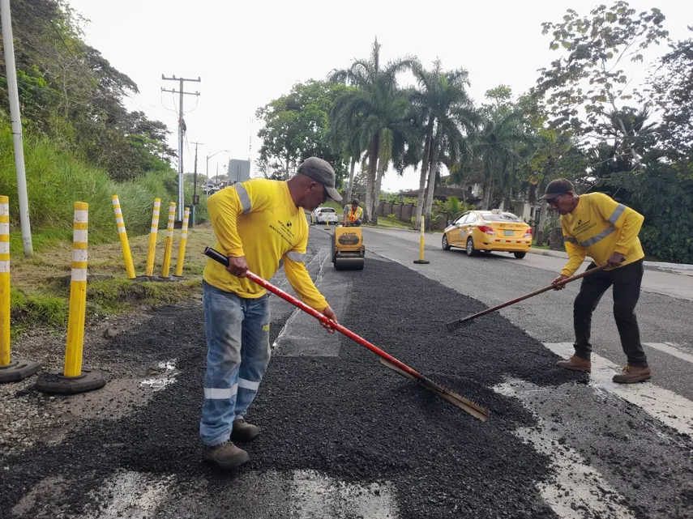
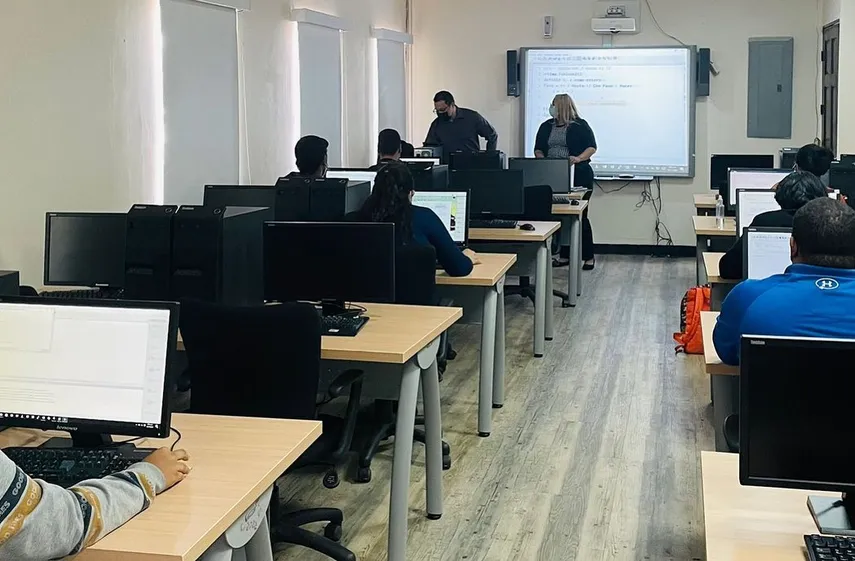

Inauguración del nuevo parque comunitario
El sábado 12 de agosto se inauguró el nuevo parque vecinal...
Leer másMantente informado sobre las actividades, eventos y mejoras que ocurren en nuestra comunidad.

El sábado 12 de agosto se inauguró el nuevo parque vecinal...
Leer más
Vecinos organizan jornadas de reciclaje para reducir desechos...
Leer más
Personal municipal inició la reparación de luminarias dañadas...
Leer más
La comunidad celebró con música, comida y actividades para toda la familia...
Leer más
El equipo de mantenimiento vial comenzó los trabajos de reparación...
Leer más
Se abrió la inscripción al nuevo curso para adultos mayores...
Leer más